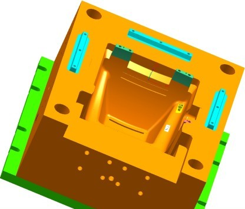
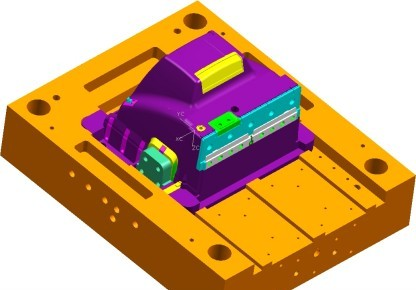
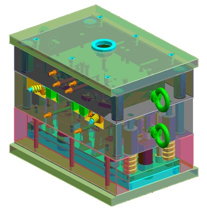

Sezgin Uzcan
Tasarým, Analiz ve Sýcak Yolluk
Sistemleri Ürün Yöneticisi
2M Çözüm Mühendislik & Danýþmanlýk Ltd. Þti.
Ocak 2006, Ýstanbul
Not: Orijinal olarak TurkCADCAM.net Dergisi 2. Sayýsý için hazýrlanmýþ bu makale, Mayýs 2007'de TurkCADCAM.net Portalý'nda yayýnlanmýþtýr.
Giriþ:
Çok basit Pazar alýþveriþlerinde bile farkýndan olmadan ortaya koyduðumuz yazýlý olmayan bir takým kriterlerimiz varken, (Domatesin düzgün þekilli, renginin pembeden kýrmýzýya henüz dönmüþ olmasý, patlýcanýn boyutunun 1 adetten 2 dolma elde edilebilecek boyda ve sert olmasý, maydanozun yeþil olmasý v.s.) Giysi satýn alýrken; zevkimize uygun renk, desen, mevsim, fiyat kalite dengesi gibi kriterler varken...
En kolay tarif edebileceðimiz 8 gözlü bir rondela kalýbýnýn bile bizlere binlerce YTL'ye mal olduðunu düþünürsek, bu konuda pazar alýþveriþinden daha hassas davranmamýz gerekir diye düþünüyorum.
Konu ile ilgili yaklaþýk 26 yýllýk birikim ile dahi insan hata yapabiliyor bazen. Ancak her konuda olduðu gibi kalýp sipariþi ve kalýp teklifi verme konularýnda da doküman kullanma alýþkanlýðý edinmenin hayatý kolaylaþtýrdýðý tartýþýlmaz.

Sektörde yeterince zaman geçirmemiþ, sonradan katýlmak durumunda kalmýþ müþteri adaylarýndan bazen þöyle <fiyat talepleri> alýyoruz.
(Ellerinde herhangi bir örnek parça ya da teknik resim dahi yok iken)
S - Bir kalýp kaç para?..
C - !..
Özür dilerim, amacým bu arkadaþlarý küçümsemek deðil. Ancak pazarda alýþveriþ yaparken bile ince eleyip sýk dokuyan bizler iþ hayatýmýzý idame ettirmemizi kolaylaþtýracak, bize para kazandýracak eylemler için yatýrým aþamasýna gelince maalesef ayný özeni göstermiyoruz.
Tüm bunlar bu iþi usulüne uygun yapan firmalar yok anlamýna gelmiyor tabii ki var ve azýmsanmayacak kadar da çok.
Kalýp fiyatlandýrma kriterleri:
Kalýp üretimi hizmeti verenlerin olduðu gibi, hizmeti almak isteyen müþteri adaylarýnýn da alacaklarý hizmetin neleri içereceði konularýna açýklýk getirmeleri, kalýp tekliflerinin olmazsa olmaz gereklerindendir.
Kýsaca, hizmeti talep eden ne istediðini açýk ve net bir þekilde ortaya koymalý ki, hizmeti veren ya da hizmet vermeye aday tüm imalatçýlar da ayný taleplere göre teklif sunsunlar. Aksi halde farklý kalýp malzemeleri ve üretim þekillerinin doðuracaðý farklý maliyetler ortaya çýkacaktýr.

Þimdi Plastik enjeksiyon kalýbý sipariþinde, kalýp yapýmcýsý firmalarýn teklif verebilmek için gereksinim duyduklarý bilgilere bir göz atalým;
1- Ýdame (mevcut kalýbý çoðaltma) kalýplar için teklif talep etme halinde,
- Mevcut Plst. parça ve kalýp ile ilgili tüm bilgiler;
- Kalýp teknik resimleri,
- Parça örnekleri (yolluklarý ile birlikte)
- Kalýpta yaþanan sýkýntýlar,
- Yeni kalýptan beklenenler,
- Çevrim süresinde iyileþtirme,
- Kalýp ömrünün daha uzun olmasý,
- Lokma konfigürasyonunda iyileþtirme v.b.
- Hammadde deðiþikliði olacak mý?
2- Yeni bir parça için kalýp teklifi talep etme halinde,
- Parça teknik resimleri, (varsa parça prototipi de birlikte olursa daha iyi olur)
- Kalýp göz adedi, (bu konuda fikir verilemiyorsa plastik parçanýn yýllýk ihtiyaç miktarý)
- Yýllýk ihtiyaç miktarý kalýp tasarýmýný etkileyen önemli faktörlerden biridir,
- Kullanýlacak hammadde ve alternatif malzemeler,
- Hammadde de renk deðiþimi olacak mý?
- Enjeksiyonla imalat için kullanýlacak makine parametreleri,
- Makine Max. kapatma basýncý,
- Mengene max. ve min. aralýk ölçüleri,
- Kolon aralýk ölçüleri,
- Min., çevrim süresi,
- Sýcak yolluk kullanýlmasý durumunda marka kriteri var mý?
- Parçada izin verilen yolluk giriþ bölgeleri,
- Kullanýlacak çelik malzemeler,
- Isýl iþlem talebi,
- Lokma / model deðiþimi olacak mý?
- Kullanýlacak standart parçalarýn marka ya da tedarik adresleri,
- Projenin devreye alýnmasýnýn planlandýðý tarih.
Gibi konularýn baþlangýçta üretim için teklif verecek aday firmalara iletilmesi aday firmalarýnda bu sorulara negatif ya da pozitif cevap veren teklifler sunmalarý halinde daha saðlýklý sonuçlar elde edileceði açýktýr.

Gerek kalýp üreticilerinin, gerekse talep sahiplerinin ilk anda önemsemeyebildikleri bu detaylar teklif isteme ve teklif verme aþamalarýnda yeterince incelenmeden karþý tarafa sunulduðunda;
- Sürekli tekrarlanan iletiþim ihtiyacý dolayýsý ile zaman kayýplarý,
- Ayný ürün için verilen tekliflerde, kalýp yapýmcý firmalar arasýnda inanýlmaz fiyat ve imalat süreleri farklýlýklarý,
Sonuçlarý talep sahiplerini, kalýp sipariþi konularýnda yanlýþ kararlara sevk edebilmektedir.
Her iþi olabildiðince en az zamanda en doðru biçimde yapmayý ilke edinmenin bizlere görünmeyen zaman ve paralar kazandýracaðý açýktýr.
Allah hiçbir kalýp üretimi iþletme sahibini 'Bir kalýp kaç para?..' türünde sorularla baþ baþa býrakmasýn.
Sevgi ve saygýlarýmla